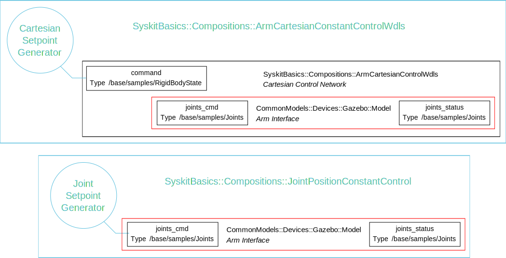
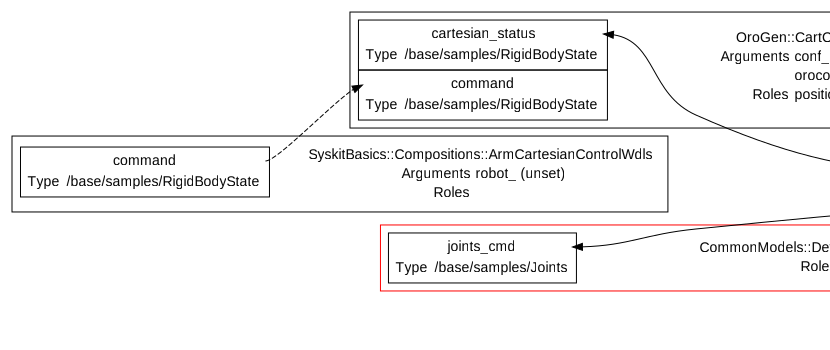
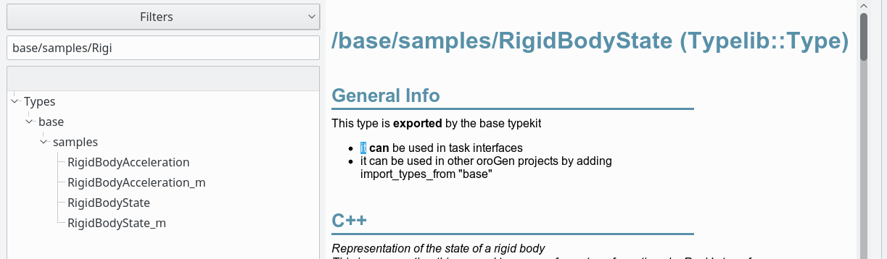
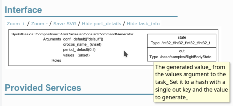

Creating our Command Generator
Where are we ? We have created
The SyskitBasics::Compositions::ArmCartesianControlWdls composition, which positions an arm
at a given cartesian position. The cartesian position is provided outside the
network. We will now create and integrate both the generator to provide this
setpoint, as well as the generator to maintain a constant joint position.
The next pages will then bind the result to the simulation and finally deploy and run it.
We will also learn how to write unit tests.
Below, the parts we will handle on this page are in blue.

- The Cartesian Constant Generator
- Improving the arguments
- Testing
- Creating the ArmCartesianConstantControlWdls Composition
- The Joint Position Constant Generator
The Cartesian Constant Generator
For the command, let's generate a single constant command. It will allow us to
move the arm tip from one point to another, expressed in the cartesian frame.
The first step is to find out what's the data type of the port. If we look at
the dataflow in the ArmCartesianControlWdls composition, we find:

The type name is /base/samples/RigidBodyState. Types like this one are
defined when implementing components, which is something we will see
later. You can have an overview of the
types already available in your Rock workspace by looking at the Types section
in the IDE's model browser. Clicking on a port will lead you to this port's
type page. Right-clicking on any page allows to go to previous pages.
bundles/common_models provides Compositions::ConstantGenerator, a generic
implementation of a component that periodically emits a value of a certain type. This generator is
a Syskit::RubyTaskContext, which a component that is executed as part of
the Syskit process. It is useful to create very simple components without having
to get through the process of creating a full-fledged C++ component. It is also used in tests to stub existing components.
ConstantGenerator is generic, so it's not used as-is. One instead
creates a specific component for the task at hand. In our case, we'll create
the Compositions::ArmCartesianConstantCommandGenerator generator specialized for
our purposes.
First, generate the new model
$ syskit gen ruby_task arm_cartesian_constant_command_generator
exists models/compositions
create models/compositions/arm_cartesian_constant_command_generator.rb
exists test/compositions
create test/compositions/test_arm_cartesian_constant_command_generator.rb
The easiest way to reuse the constant generator is to subclass our generator
from it, by using the ConstantGenerator.for(type) method. We first have
to import the type. typekits are the units that define types in a rock system, so we have to import
/base/samples/RigidBodyState's typekit, which is listed on the type's page:

To import it, one must use the import_types_from stanza. Let's put it all together:
import_types_from 'base'
require 'common_models/models/compositions/constant_generator'
module SyskitBasics
module Compositions
class ArmCartesianConstantCommandGenerator <
CommonModels::Compositions::ConstantGenerator.
for('/base/samples/RigidBodyState')
end
end
end
which gives us

The documentation of the out port tells us that its value is controlled by
the 'values' arguments. Task arguments are ways to parametrize tasks from
within Syskit, and are listed in the middle of the task rectangle. In the
generator, we see for instance four: period, orocos_name, conf and
values. orocos_name is set by Syskit itself, period is the period at
which the value should be generated. We will see about conf later on this
page.
Improving the arguments
The format of the 'values' is actually awkward for a command generator. Let's
provide a better setpoint argument that is transformed to set values.
class ArmCartesianConstantCommandGenerator <
CommonModels::Compositions::ConstantGenerator.
for('/base/samples/RigidBodyState')
# The setpoint as a { position: p, orientation: q } hash
argument :setpoint
def setpoint=(setpoint)
rbs = Types.base.samples.RigidBodyState.Invalid
# Use 'fetch' to generate an error if the key is not present
# in the hash
rbs.position = setpoint.fetch(:position)
rbs.orientation = setpoint.fetch(:orientation)
self.values = Hash['out' => rbs]
end
end
Note: the position and orientation here are assumed to be respectively a vector (of type Eigen::Vector3) and a quaternion (of type Eigen::Quaternion). The underlying type system is a subject for another part. For now, just accept it.
This kind of "high-level argument shadowing low-level arguments" sugar must have a one-to-N relationship (usually one-to-one). It is possible but not trivial, under the Syskit argument handling, to "aggregate" multiple high-level arguments into a low-level one.
Finally, the command is timestamped, so we need to update the timestamp each time the value is read
class ArmCartesianConstantCommandGenerator < ...
...
def values
if v = super
# Do not change the argument "under the hood"
sample = v['out'].dup
sample.time = Time.now
Hash['out' => sample]
end
end
end
Testing
Unlike the composition that created the arm control network, the
ArmCartesianConstantCommandGenerator contains "active" code, that is code that will
be evaluated at runtime. It is important to properly unit-test it to ensure
its correctness.
Each time we ran syskit gen, files were created both in models/ and
test/. The default Syskit test framework is the spec implementation of
minitest. Let's now adapt these
templates for our generator.
Start by deleting the default test from
test/compositions/test_arm_cartesian_constant_command_generator.rb, to keep
only the describe block:
require 'models/compositions/arm_cartesian_constant_command_generator'
module SyskitBasics
module Compositions
describe ArmCartesianConstantCommandGenerator do
end
end
end
The first step in each test usually is to get a deployed, ready-to-test instance of our component or composition model. The test harness provides a set of methods for this:
syskit_stub_and_deploywill create this instancesyskit_configurewill then configure it, making it ready to be startedsyskit_startwill then start it
Commonly, one would use syskit_stub_deploy_and_configure and
syskit_stub_deploy_configure_and_start as shortcuts for the sequential calls.
The argument to these methods is the task model under test, that is
ArmCartesianConstantCommandGenerator here. If arguments are needed, they are
provided with the .with_arguments(key: 'value') call. Testing how values is
set from setpoint therefore looks like:
it "propagates its position and orientation arguments to #values" do
p = Eigen::Vector3.new(1, 2, 3)
q = Eigen::Quaternion.from_angle_axis(0.2, Eigen::Vector3.UnitX)
task = syskit_stub_deploy_configure_and_start(
ArmCartesianConstantCommandGenerator.
with_arguments(setpoint: Hash[position: p, orientation: q]))
assert_equal p, task.values['out'].position
assert_equal q, task.values['out'].orientation
end
From the command line, one runs the tests on a single file with:
$ syskit test -rgazebo test/compositions/test_arm_cartesian_constant_command_generator.rb
and all the tests for a given robot configuration with
$ syskit test -rgazebo
Note that the our new tests would not be run by simply calling syskit test
-rgazebo, as the generator and composition models are not loaded within the gazebo configuration (yet).
The IDE also gives an interface to the tests. It will display all the tests for the given robot configuration and allow to start them separately. It also allows to auto-run all the discovered tests, and re-run tests when the files change, like so:
Now, let's test if the timestamp is properly set. Given that time is a very common quantity in Syskit tests, the Syskit test harness integrates with the timecop library.
it "returns the value with an updated timestamp" do
p = Eigen::Vector3.new(1, 2, 3)
q = Eigen::Quaternion.from_angle_axis(0.2, Eigen::Vector3.UnitX)
task = syskit_stub_deploy_configure_and_start(
ArmCartesianConstantCommandGenerator.
with_arguments(setpoint: Hash[position: p, orientation: q]))
Timecop.freeze(expected_time = Time.now)
sample = expect_execution.
to { have_one_new_sample task.out_port }
assert_in_delta expected_time, sample.time, 1e-6
end
The expect_execution construct is the Syskit starting point for all things
asynchronous in tests. Sending and receiving samples requires the constant
generator to be executed - and therefore Syskit's own execution loop as well.
Rock's time representation has a precision of one microsecond, while Linux
(and therefore Ruby's Time class) go to the nanoseconds. This is why the
time comparison is not done using assert_equal, but assert_in_delta.
Given that the preamble of our two tests is the same, it would be best to move it into a before block:
describe ArmCartesianConstantCommandGenerator do
attr_reader :task, :p, :q
before do
@p = Eigen::Vector3.new(1, 2, 3)
@q = Eigen::Quaternion.from_angle_axis(0.2, Eigen::Vector3.UnitX)
@task = syskit_stub_deploy_configure_and_start(
ArmCartesianConstantCommandGenerator.
with_arguments(setpoint: Hash[position: p, orientation: q]))
end
it "propagates its position and orientation arguments to #values" do
assert_equal p, task.values['out'].position
assert_equal q, task.values['out'].orientation
end
it "returns the value with an updated timestamp" do
Timecop.freeze(expected_time = Time.now)
sample = expect_execution.
to { have_one_new_sample task.out_port }
assert_in_delta expected_time, sample.time, 1e-6
end
end
Creating the ArmCartesianConstantControlWdls Composition
Now that we have a generator, let's bind it to our control loop to have something that can move and hold our arm to a given pose. This is obviously going to be done by a composition as well.
$ syskit gen cmp arm_cartesian_constant_control_wdls
Trivially, the network just binds the control network with the generator:
require 'syskit_basics/models/compositions/arm_cartesian_constant_command_generator'
require 'syskit_basics/models/compositions/arm_cartesian_control_wdls'
module SyskitBasics
module Compositions
class ArmCartesianConstantControlWdls < Syskit::Composition
add ArmCartesianConstantCommandGenerator, as: 'command'
add ArmCartesianControlWdls, as: 'control'
command_child.out_port.
connect_to control_child.command_port
end
end
end
Inspect the resulting network in the IDE. See how the hierarchy view has two levels of composition, which is resolved at the dataflow level.
Tip: One can hide the compositions in the dataflow view to help readability with the Hide compositions button
Let's run the generated test now:
$ syskit test -rgazebo test/compositions/test_arm_cartesian_constant_control_wdls.rb
Run options: --seed 31835
# Running:
E
Finished in 0.341306s, 2.9299 runs/s, 5.8598 assertions/s.
1) Error:
SyskitBasics::Compositions::ArmCartesianConstantControlWdls#test_0001_starts:
cannot find an ordering to configure 1 tasks
SyskitBasics::Compositions::ArmCartesianConstantCommandGenerator:0x2714010
owners:
arguments:
orocos_name: "stub3",
period: 0.1,
conf: ["default"]
ready_for_setup? false
missing_arguments: setpoint, values
has no should_configure_after constraint
…manipulation.rb:788:in `syskit_configure'
…manipulation.rb:1047:in `syskit_configure_and_start'
…manipulation.rb:1006:in `syskit_stub_deploy_configure_and_start'
test/compositions/test_arm_cartesian_constant_control_wdls.rb:10:in `block (2 levels) in <module:Compositions>'
As-is, the test generated by the template fails. The test looks like:
cmp_task = syskit_stub_deploy_configure_and_start(
ArmCartesianConstantControlWdls)
The error message is that cannot find an ordering to configure 1 tasks, the
task being
SyskitBasics::Compositions::ArmCartesianConstantCommandGenerator:0x2714010.
This is not our composition, but the constant generator. What's going on ?
Syskit tasks can only be configured and started if all their arguments are set.
Having unset arguments is a very common cause for the error we're having here,
and indeed we can see that missing_arguments: setpoint, values.
In order to be able to see the encompassing ArmCartesianConstantControlWdls
as a single component for the outside system, we would need to define a
setpoint argument on it and forward it to the generator. This is a very common
pattern, and Syskit supports it:
require 'syskit_basics/models/compositions/arm_cartesian_constant_command_generator'
require 'syskit_basics/models/compositions/arm_cartesian_control_wdls'
module SyskitBasics
module Compositions
class ArmCartesianConstantControlWdls < Syskit::Composition
argument :setpoint
add(ArmCartesianConstantCommandGenerator, as: 'command').
with_arguments(setpoint: from(:parent_task).setpoint)
...
end
end
end
Let's modify the test to actually set the setpoint, and verify it is forwarded.
Delete the it "starts" test and replace it with
it "forwards its setpoint argument to the generator child" do
setpoint = Hash[
position: Eigen::Vector3.new(1, 2, 3),
orientation: Eigen::Quaternion.from_angle_axis(0.4, Eigen::Vector3.UnitZ)]
cmp = syskit_stub_deploy_configure_and_start(
ArmCartesianConstantControlWdls.with_arguments(setpoint: setpoint))
assert_equal setpoint, cmp.command_child.setpoint
end
The Joint Position Constant Generator
There's another control mode that we need. In order to either hold a position, or go into a safe position, one needs a joint position constant generator and the corresponding composition.
The creation of this generator is left to the reader.
Tip: a good representation for the setpoint would be a
joint_name=>joint_position hash, where joint_name is a string and
joint_position a floating-point value (always in radians !). Given that we've
not yet dealt with the type system, you will also need to know that to create
a /base/commands/Joints from within Ruby, you do:
Types.base.commands.Joints.new(
time: Time.at(0),
names: joint_names,
elements: joint_commands)
where joint_names is an array of strings and joint_commands an array of
Types.base.JointState.new(
position: position,
speed: Float::NAN
effort: Float::NAN
raw: Float::NAN
acceleration: Float::NAN)
NaN is used within Rock to indicate either 'unset' (for commands) or
'unknown' (for sensor readings)
Solution The JointPositionConstantGenerator
Let's generate the files
syskit gen ruby_task joint_position_constant_generator
models/compositions/joint_position_constant_generator.rb:
require 'common_models/models/compositions/constant_generator'
import_types_from 'base'
module SyskitBasics
module Compositions
class JointPositionConstantGenerator <
CommonModels::Compositions::ConstantGenerator.
for('/base/commands/Joints')
# The setpoint as a hash of joint names to joint positions
argument :setpoint
def setpoint=(setpoint)
joint_names = setpoint.keys
joint_commands = setpoint.each_value.map do |position|
Types.base.JointState.new(
position: position,
speed: Float::NAN,
effort: Float::NAN,
raw: Float::NAN,
acceleration: Float::NAN)
end
self.values = Hash['out' =>
Types.base.commands.Joints.new(
time: Time.at(0),
names: joint_names,
elements: joint_commands)]
end
def values
if v = super
# Do not change the argument "under the hood"
sample = v['out'].dup
sample.time = Time.now
Hash['out' => sample]
end
end
end
end
end
and the test test/compositions/test_joint_position_constant_generator.rb:
require 'syskit_basics/models/compositions/joint_position_constant_generator'
module SyskitBasics
module Compositions
describe JointPositionConstantGenerator do
it "sets the names and positions based on the given hash" do
task = syskit_stub_deploy_configure_and_start(
JointPositionConstantGenerator.
with_arguments(setpoint: Hash['j0' => 10, 'j1' => 20]))
assert_equal ['j0', 'j1'], task.values['out'].names
assert_equal [10, 20], task.values['out'].elements.map(&:position)
end
it "returns the value with an updated timestamp" do
task = syskit_stub_deploy_configure_and_start(
JointPositionConstantGenerator.
with_arguments(setpoint: Hash['j0' => 10, 'j1' => 20]))
Timecop.freeze(expected_time = Time.now)
sample = expect_execution.
to { have_one_new_sample task.out_port }
assert_in_delta expected_time, sample.time, 1e-6
end
end
end
end
Let's now create the corresponding composition:
syskit gen cmp joint_position_constant_control
Fill the implementation in models/compositions/joint_position_constant_control.rb:
require 'common_models/models/devices/gazebo/model'
require 'syskit_basics/models/compositions/joint_position_constant_generator'
module SyskitBasics
module Compositions
class JointPositionConstantControl < Syskit::Composition
# The setpoint as a 'joint_name' => position_in_radians hash
argument :setpoint
add CommonModels::Devices::Gazebo::Model, as: 'arm'
add(JointPositionConstantGenerator, as: 'command').
with_arguments(setpoint: from(:parent_task).setpoint)
command_child.out_port.connect_to \
arm_child.joints_cmd_port
end
end
end
And modify the test:
require 'syskit_basics/models/compositions/joint_position_constant_control'
module SyskitBasics
module Compositions
describe JointPositionConstantControl do
it "forwards its setpoint argument to the constant generator" do
cmp_task = syskit_stub_deploy_configure_and_start(
JointPositionConstantControl.
with_arguments(setpoint: Hash['j0' => 10]))
assert_equal Hash['j0' => 10], cmp_task.command_child.setpoint
end
end
end
end